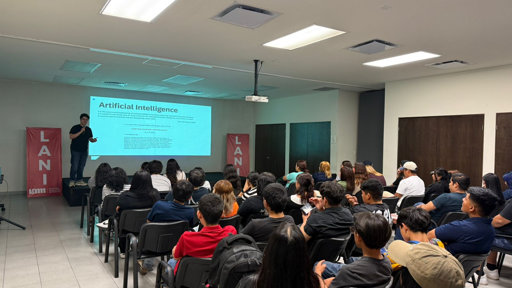
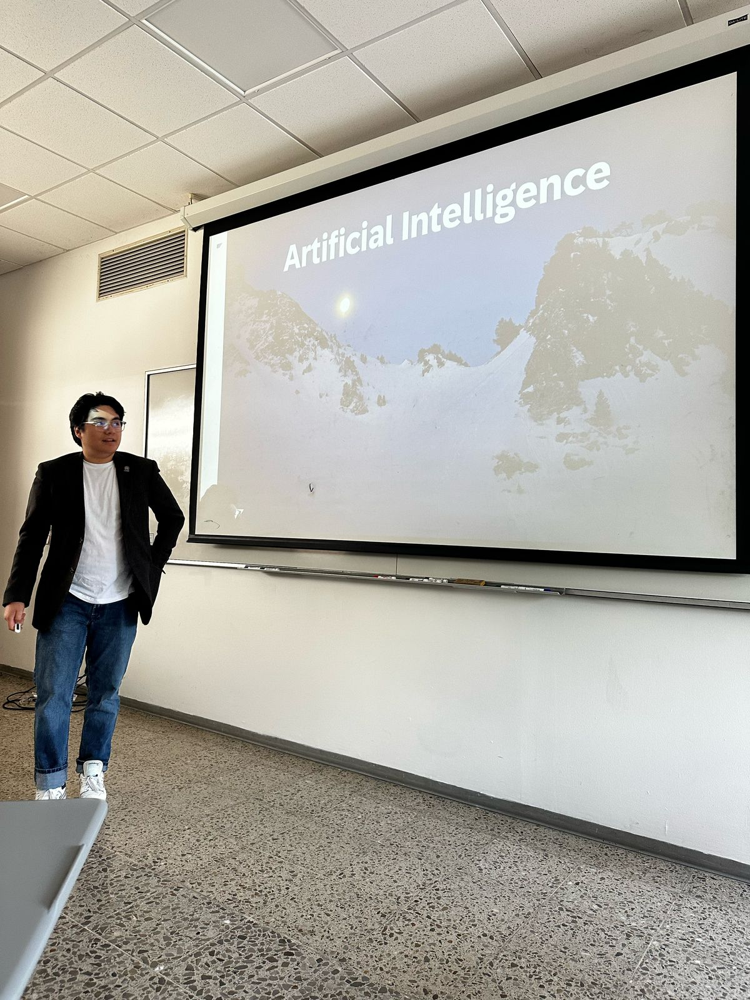
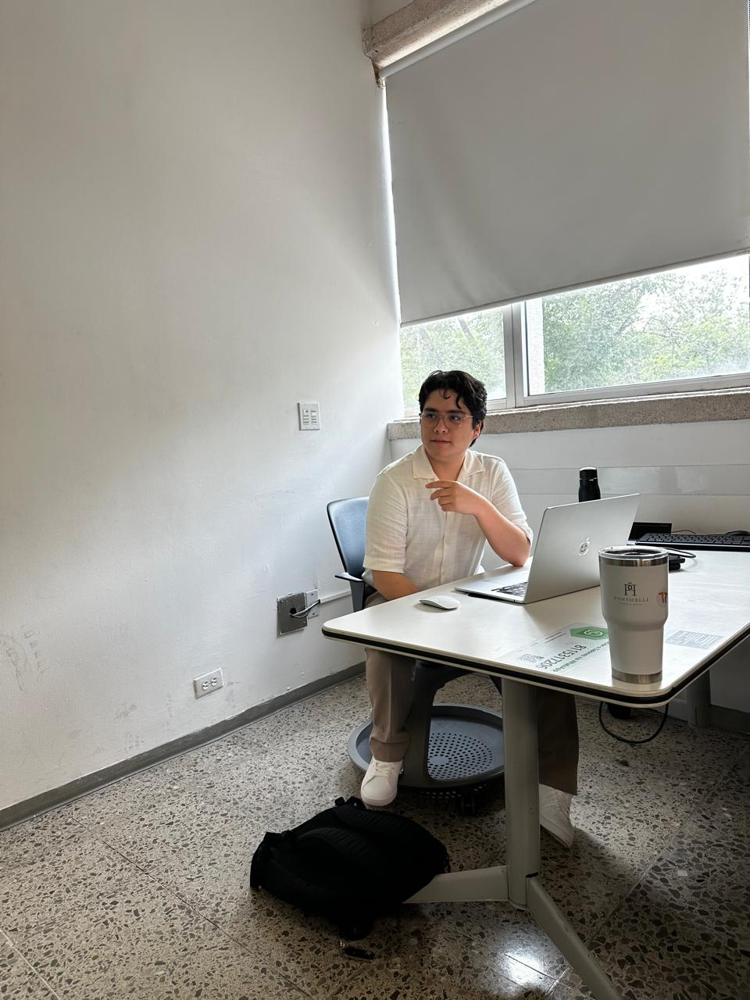
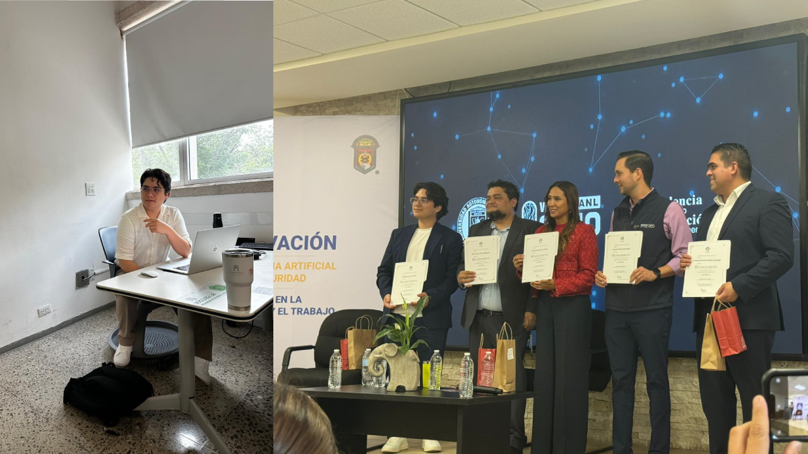
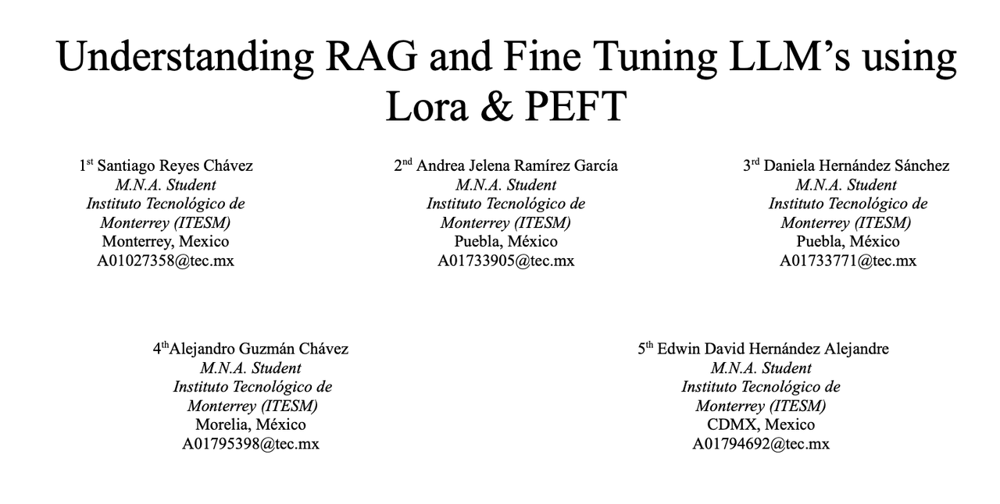
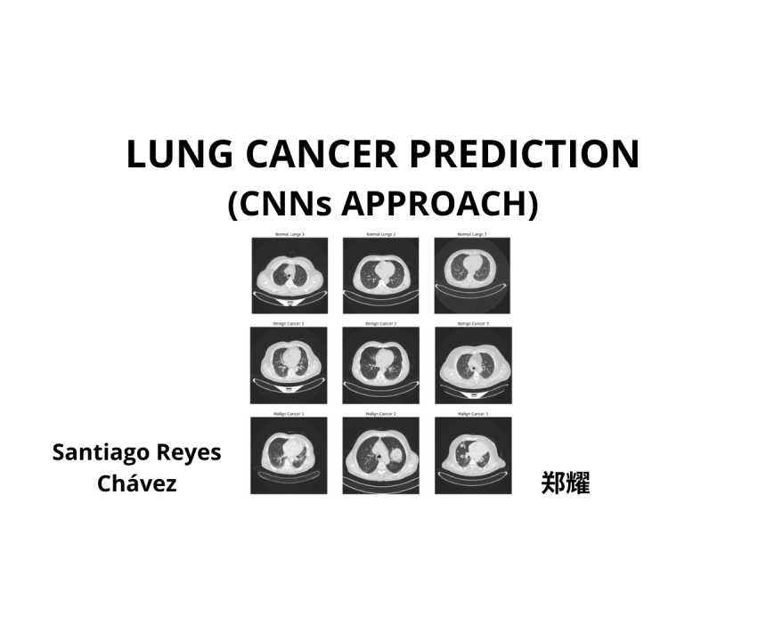
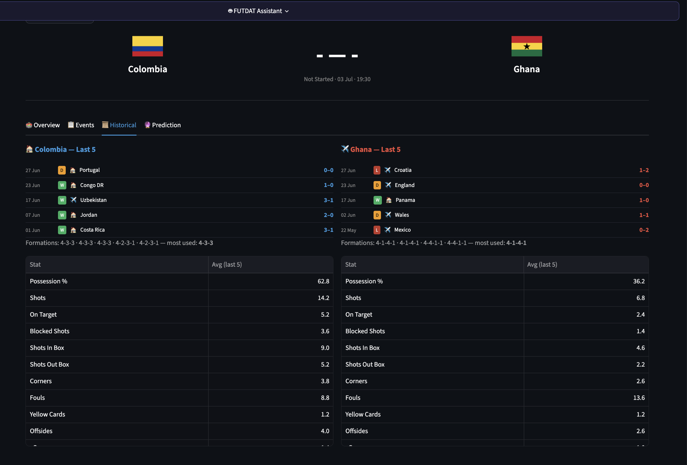

Photos
Gallery





GCID AIOps Engineer (SRE) at SAP with two Master's degrees — MS in Applied Artificial Intelligence (ITESM) and MS in IT Management (UTM, in progress). I specialize in applying ML to infrastructure problems: anomaly detection, AI Security, and autonomous agent development.
Specialization in Renewable Energy & Advanced Data Analytics. Outside of work I'm a musician, gamer, and always learning something new.
Skills
Experience
GCID AIOps Engineer (SRE)
SAP
Education
MS Applied Artificial Intelligence
ITESM
MS IT Management
UTM · in progress
Skills
Experience
GCID AIOps Engineer (SRE)
SAP
Education
MS Applied Artificial Intelligence
ITESM
MS IT Management
UTM · in progress
Work

Research paper on LoRA, PEFT, and RAG — efficient techniques to adapt LLMs to domain-specific tasks without full retraining.

Two CNNs classifying lung CT scans as Normal, Benign, or Malignant — Model 2 hit 100% accuracy on the test set, prioritizing recall for malignant detection.
More projects on the way.
Updates

I built a real-time football analytics platform (FutDat) that predicts match outcomes and generates deep tactical insights — featuring live data analysis and a personalized AI assistant that breaks down complex results into clear, actionable explanations.
read on LinkedIn →Photos




Contact
Have a question, a proposal, or just want to connect? Reach out!